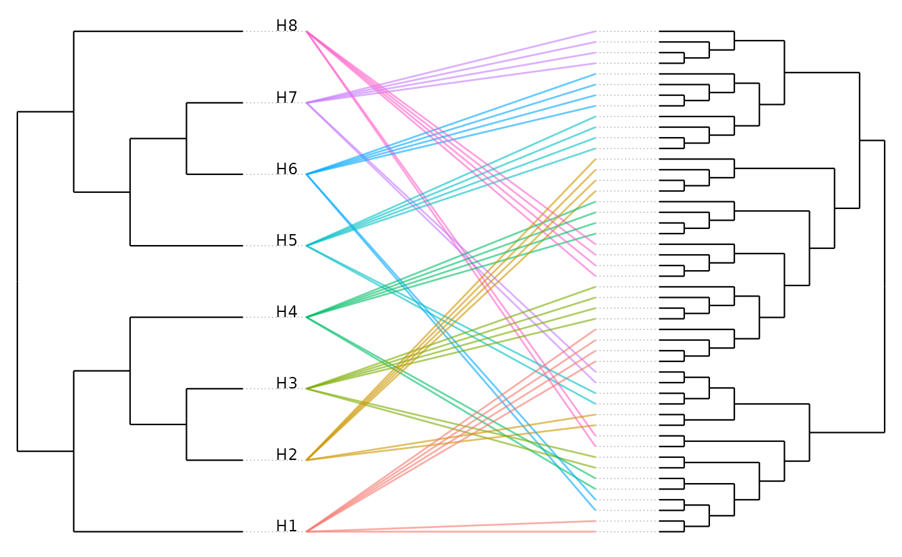

Draws a tanglegram: the host tree on the left, the symbiont tree mirrored on the right, and a line for each host-symbiont association. Optionally rotates the symbiont tree to align it with the host tree and colours the association lines.
Usage
plot_codiv_trees(
Host_tree,
Symbiont_tree,
Host_to_Symbiont_df,
codiv_results = NULL,
color_by = c("host", "none", "significance"),
significance_threshold = 0.05,
line_width = 0.5,
line_alpha = 0.6,
title = NULL,
use_procrustes = TRUE,
show_host_labels = TRUE,
show_symbiont_labels = FALSE,
label_size = 3.2,
use_branch_lengths = FALSE
)Arguments
- Host_tree
A phylo object; host phylogenetic tree
- Symbiont_tree
A phylo object; symbiont phylogenetic tree
- Host_to_Symbiont_df
A data frame with columns "Host" and "Symbiont" linking symbionts to hosts
- codiv_results
Optional
codiv()result; required forcolor_by = "significance"- color_by
How to colour the association lines: "host" (default, by host), "none", or "significance" (symbionts in significant nodes)
- significance_threshold
p-value threshold for
color_by = "significance"; default 0.05- line_width
Width of the association lines; default 0.5
- line_alpha
Transparency of the association lines (0-1); default 0.6
- title
Plot title; default NULL
- use_procrustes
If TRUE (default), rotate the symbiont tree to align it with the host tree and reduce line crossings
- show_host_labels
If TRUE (default), label host tips
- show_symbiont_labels
If TRUE, label symbiont tips; default FALSE (symbiont trees are often large)
- label_size
Tip label text size; default 3.2
- use_branch_lengths
If FALSE (default), use a cladogram layout (tips aligned, nodes spread by topology) for an uncluttered view; if TRUE, scale horizontal position by branch length
Value
A ggplot object, customizable with further ggplot2 layers and
saveable with ggplot2::ggsave().
Details
Requires the ggplot2 package. The tree layout is computed with ape and the
alignment uses ape::rotateConstr(). By default a cladogram layout is used
(tips aligned, nodes spread by topology); set use_branch_lengths = TRUE to
position nodes by branch length instead.
Examples
# \donttest{
if (requireNamespace("ggplot2", quietly = TRUE)) {
sim <- simulate_codiv_data(n_hosts = 8, n_clades = 2, seed = 1)
plot_codiv_trees(sim$host_tree, sim$symbiont_tree, sim$links,
color_by = "host")
}

# }